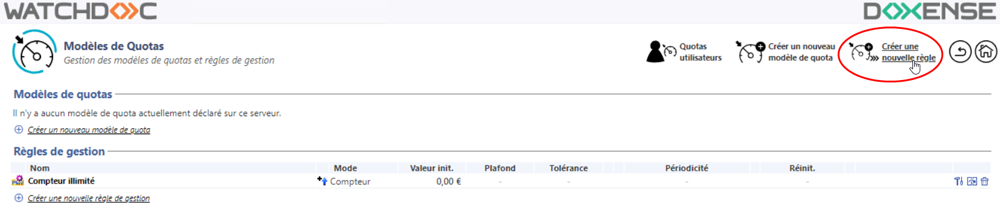
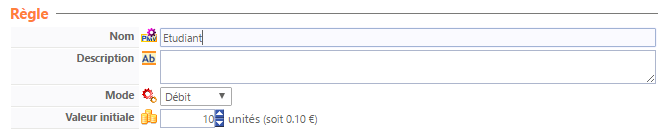
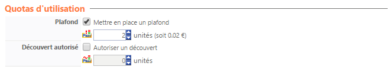
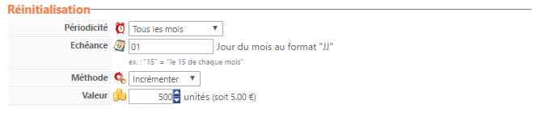

Créer une Règle de gestion
-
Depuis le Menu principal de l'interface d'administration de Watchdoc, dans la section Gestion, cliquez sur Modèles de quotas.
→ Vous accédez à la liste des Modèles de quotas et des Règles de gestion déclarés dans Watchdoc.
-
Dans la liste Règles de gestion, cliquez sur l'un des boutons Créer une nouvelle règle :

→ vous accédez à l'interface Création d'une règle de gestion constituée de plusieurs sections.
Configurer la Règle de gestion
Configurer la section Règle
-
Indiquez dans cette section les informations générales concernant la règle :
-
Nom : attribuez un nom explicite à la règle . Obligatoire, ce nom est celui qui s'affiche dans l'interface d'administration .
-
Description: si nécessaire, complétez le nom d'un commentaire permettant de préciser l'usage de la règle ;
-
Mode : dans la liste déroulante, sélectionnez l'un des modes :
-
Compteur : ce mode met à disposition de l'utilisateur un compteur (partant de 0 qui s'incrémente à chaque opération d'impression. Lorsque le compte dépasse un plafond éventuellement fixé, l'utilisateur ne peut plus imprimer.
-
Débit : ce mode met à disposition de l'utilisateur un crédit d'unités débité à chaque opération d'impression. Lorsque le compte arrive à zéro, l'utilisateur ne peut plus imprimer.
-
Valeur initiale : valeur dont le compte est crédité lors de sa création s'il est en mode Débit.

-
Configurer la section Quotas d'utilisation
-
Dans cette section, fixez les limitations propres à chaque mode :
-
Plafond : cochez la case pour mettre en place un plafond et définissez, en unités, la valeur de ce plafond. En fonction du mode choisi, le plafond est utilisé différemment:
-
avec le mode Compteur, le plafond est la valeur maximale que le compteur peut atteindre. Une fois le plafond atteint, le compteur est bloqué et doit être réinitialisé (automatiquement ou manuellement,) pour permettre à l'utilisateur d'imprimer de nouveau ;
-
avec le mode Débit, le plafond est le montant maximal autorisé lors du rechargement. Ce paramètre permet ainsi de plafonner la somme d'argent "virtuelle" contenue dans l'ensemble des PMV des utilisateurs.
-
Découvert autorisé : cochez la case pour autoriser un découvert et définissez, en unités, la valeur de ce découvert qui permet un dépassement du plafond, quel que soit le mode.

-
Configurer la section Réinitialisation
-
Dans cette section, indiquez les paramètres liés à la réinitialisation (rechargement) des comptes :
-
Périodicité :dans la liste, choisissez la fréquence à laquelle les comptes doivent être réinitialisés. La valeur par défaut est Manuelle.
-
Echéance : si vous choisissez d'automatiser la réinitialisation en choisissant une périodicité, indiquez l'échéance précise (date, mois, jour ou heure). Si l'échéance est périodique, précisez, en heures, le délai entre deux réinitialisations.
-
Méthode : dans la liste, choisissez la manière de recharger le compte de l'utilisateur :
-
Fixer la valeur : permet de réinitialiser le compte à l'aide de la valeur définie, quel que soit le crédit existant ;
Lorsque vous optez pour cette méthode, les unités non consommées avant réinitialisation sont perdues.
Ainsi, si un compte est réinitialisé tous les mois d'une valeur de 500 unités et qu'un utilisateur n'a utilisé que 250 unités le premier mois, lorsque son compte est réinitialisé, il dispose de nouveau de 500 unités, le deuxième mois et pas de 750 unités. -
Incrémenter : en mode Débit, permet de créditer le compte à l'aide de la valeur précisée, en l'ajoutant à un éventuel crédit existant ;
-
Décrémenter : en mode Compteur, permet de créditer le compte à l'aide de la valeur précisée, en l'ajoutant à un éventuel

-
Validation et application de la Règle de gestion
-
Cliquez sur le bouton
 pour Valider la configuration de votre Règle de gestion.
pour Valider la configuration de votre Règle de gestion. -
Appliquez ensuite votre Règle de gestion sur un quota, par exemple, pour en vérifier le fonctionnement.